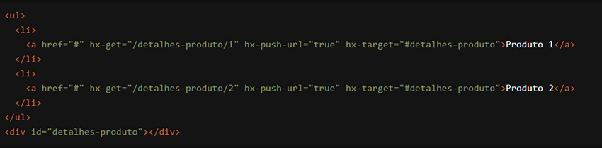

Estamos empolgados em apresentar uma funcionalidade poderosa e essencial do HTMX que transforma a navegação em suas aplicações web: o atributo `hx-push-url`. Com `hx-push-url`, você pode atualizar a URL do navegador sem recarregar a página, proporcionando uma experiência de usuário mais fluida e moderna. Vamos explorar como essa funcionalidade pode elevar o nível das suas aplicações web.
O que é o atributo `hx-push-url`?
O `hx-push-url` é um atributo do HTMX que permite modificar a URL do navegador quando uma requisição HTTP é concluída, sem a necessidade de recarregar a página. Isso significa que você pode manter o estado da aplicação refletido na URL, facilitando o compartilhamento de links e a navegação do usuário, tudo de maneira transparente e eficiente.
Como Funciona?
Vamos ver um exemplo prático para entender melhor como o `hx-push-url` pode ser usado. Suponha que você tenha uma lista de produtos e deseja que a URL do navegador seja atualizada com o ID do produto quando o usuário clicar em um item para ver seus detalhes:

Neste exemplo, quando o usuário clica em um link de produto, a requisição HTTP GET é enviada para a URL "/detalhes-produto/1" ou "/detalhes-produto/2". A resposta é então inserida no `div` com id "detalhes-produto" graças ao atributo `hx-target`. O atributo `hx-push-url="true"` garante que a URL do navegador seja atualizada com a URL da requisição, sem recarregar a página. Isso permite que a URL reflita o estado atual da aplicação, facilitando o compartilhamento e a navegação.